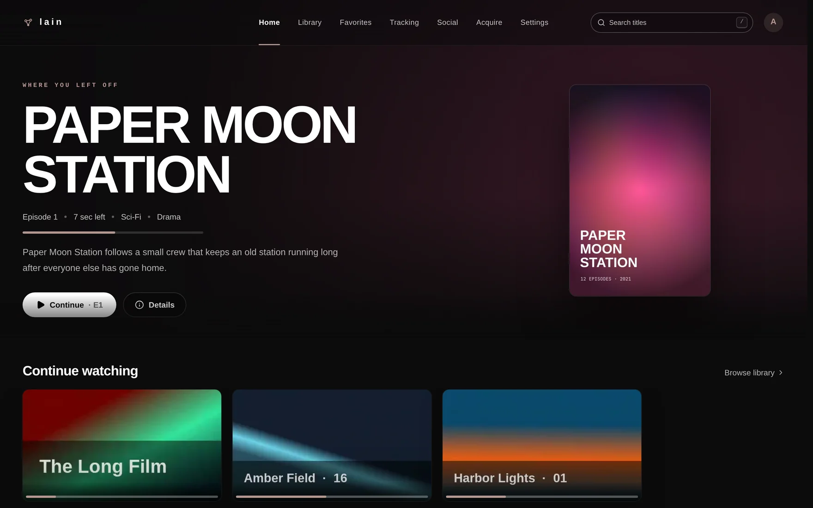
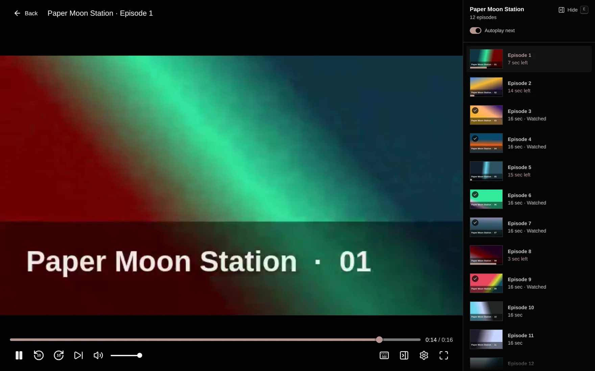
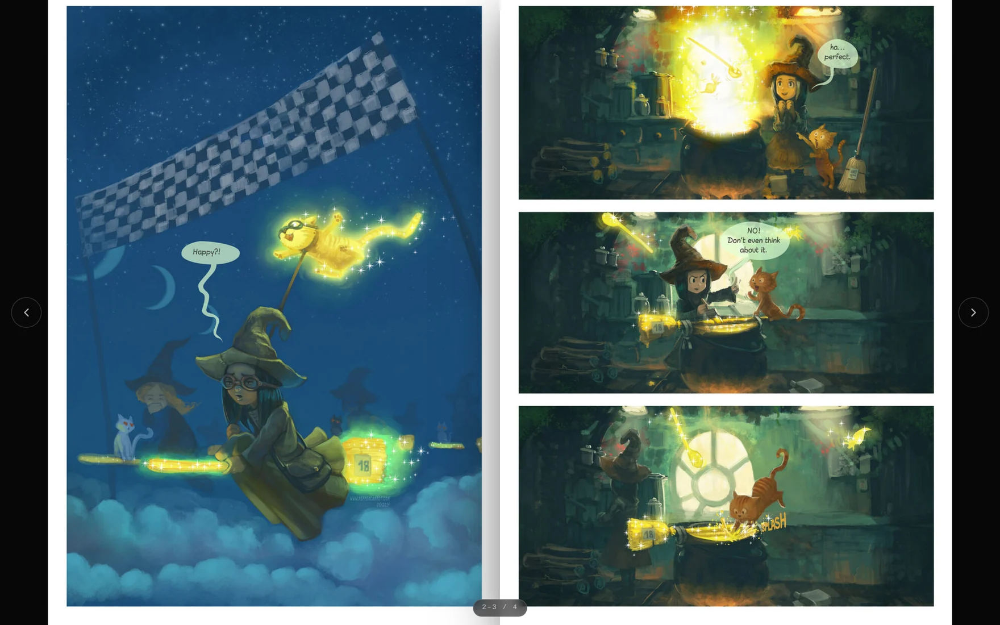
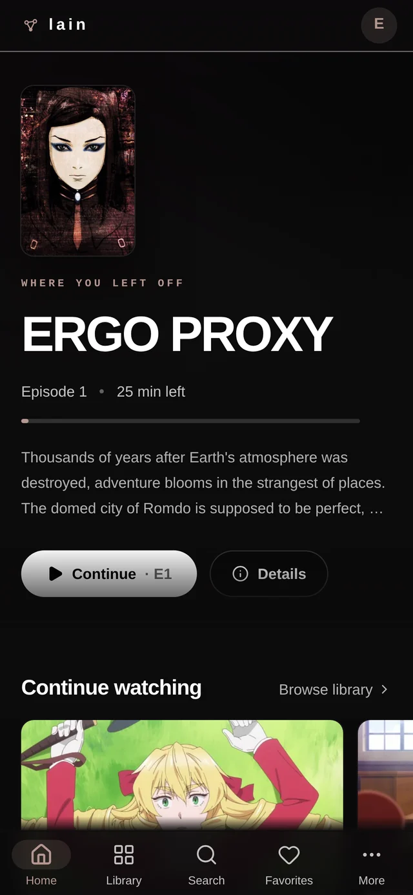
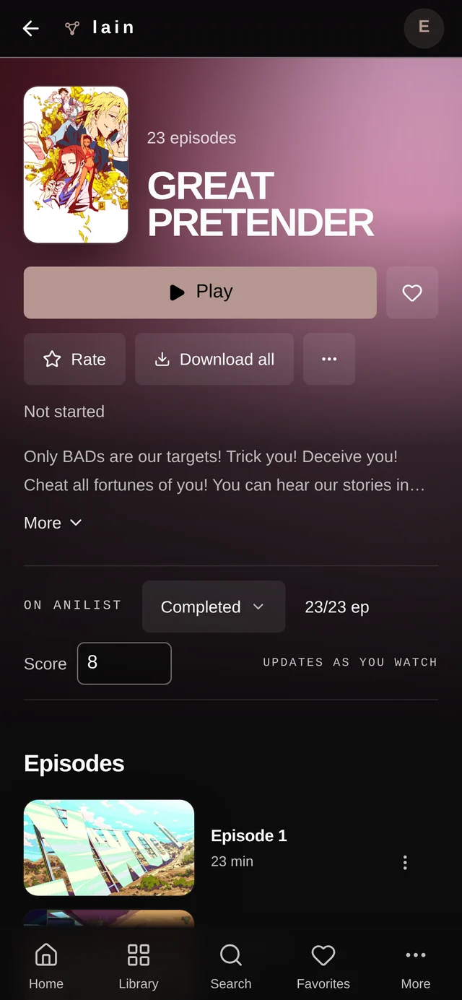
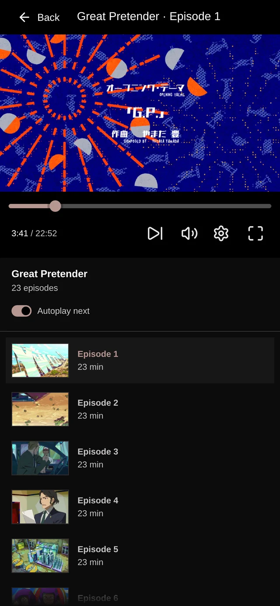
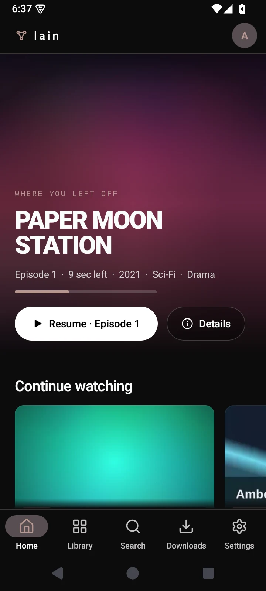
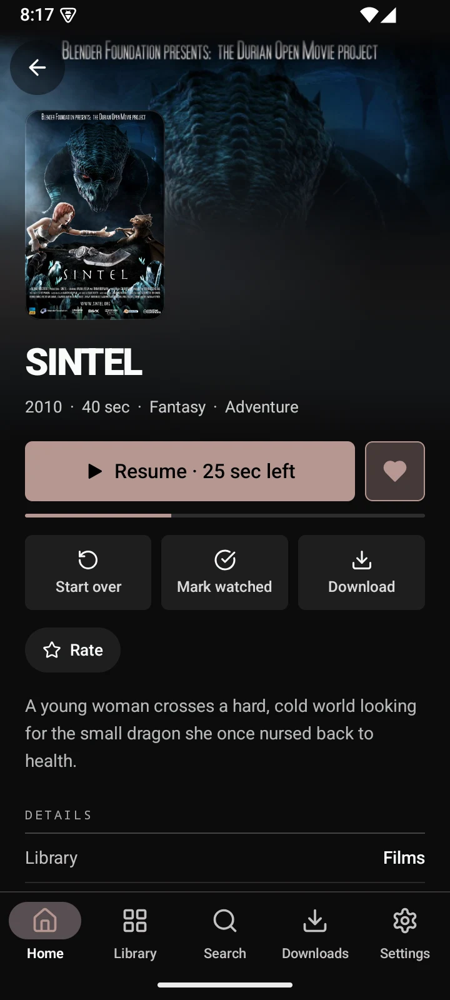
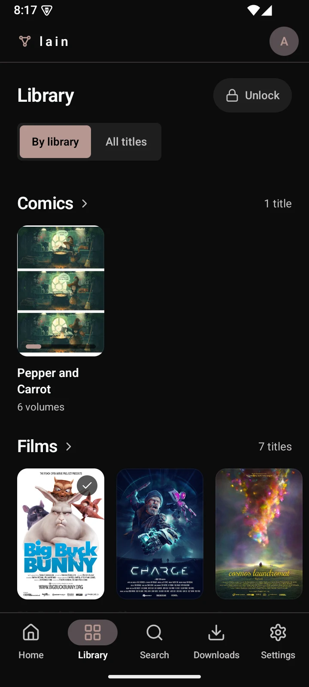
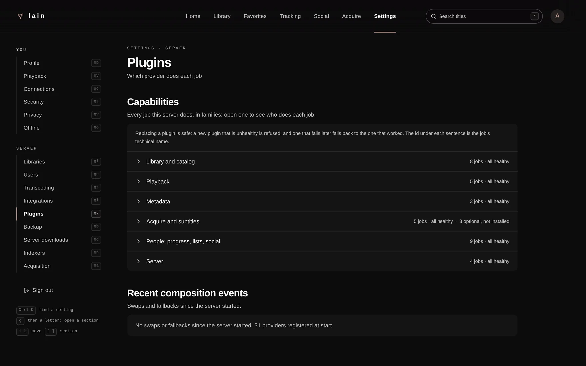

Local first
Your library is read in place: nothing is copied, moved or uploaded. Private libraries are enriched from local files only and open with a PIN.
Self-hosted media server
lain streams your films, shows and anime and opens your comics and manga, from one small Rust binary with the web client inside. No account, no cloud, nothing between you and your files.
docker run -d -p 9360:9360 -v lain-data:/data -v ~/Videos:/media ghcr.io/enrell/lain

Real screenshots of the client on its author's library. The reader, the settings and the Android app show a demo library.
The tour
Built screen by screen until nothing needed explaining: titles instead of files, one calm grid, the next thing to watch always one key away.
Watch
Direct play first, with an honest reason whenever a transcode is needed. When it is, lain uses the hardware the machine has and says what it chose.

Read
Archives open as books, next to the shows they came from. The reader remembers the page, the direction and how you like your spreads.

On every screen
The web client is designed for a thumb as much as for a keyboard. The Android app is native Kotlin on the same Rust core, signed and attached to every release.






Also: lain watch hands a title to mpv from the terminal, and a native desktop client is on the way.
Yours, all the way down
Scanning, metadata, playback, search and thumbnails are providers bound to a tiny trusted core. Swap one while the server runs; if the new one is unhealthy, the last good one keeps serving.
Your library is read in place: nothing is copied, moved or uploaded. Private libraries are enriched from local files only and open with a PIN.
/ searches, Ctrl K finds anything, ? lists what the screen you are on can do. Every action has a key, and shows it.
Link your account and Tracking shows your lists beside what you own. Finishing an episode or a chapter moves the list forward by itself.
Add your indexers through Prowlarr or Jackett in one step, or hand a short-lived, indexers-only key to a coding agent and let it set them up.
Accounts with their own progress, favourites, scores and playback limits. Friends on your server can share what they watch, if they choose to.
Online backups from a consistent snapshot, a restore that keeps the old data until it succeeds, and releases with checksums and build attestations.

Install
Open http://localhost:9360, create the first account, point lain at a folder. That is the whole setup.
The image runs on amd64 and arm64 and brings ffmpeg with it.
docker run -d --name lain \
-p 9360:9360 \
-v lain-data:/data \
-v ~/Videos:/media/videos \
ghcr.io/enrell/lain:latestAn interactive script: Docker, a static binary or a user service, your media folders, the port. It prints what it will do before doing it.
curl -fsSL https://raw.githubusercontent.com/enrell/lain/main/scripts/install.sh | bashOne static file for Linux, macOS and Windows, with the web client inside. Put it on your path and run it.
lain serve # http://localhost:9360
lain service install # or keep it running as a user serviceEvery release carries a signed APK. Install it, type your server's address, sign in. Point Obtainium at the repository to follow updates.